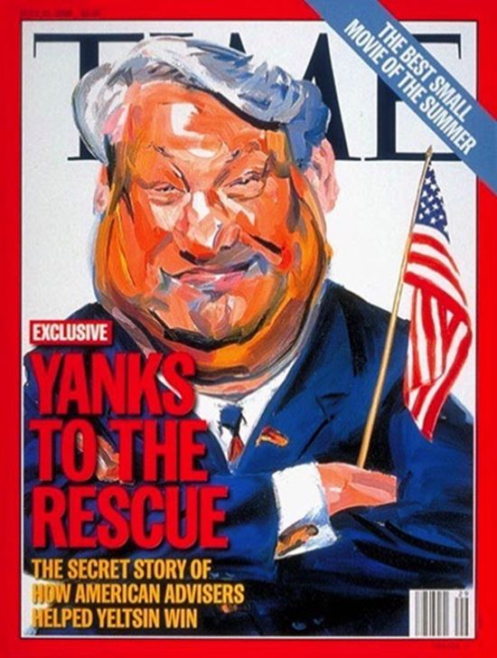

Le gouvernement et les médias mainstream des États-Unis présentent la Russie comme un agresseur dangereux auquel on doit résister et qui doit être puni, mais les Américains qui ont visité la Russie en mai ont découvert une réalité toute différente, écrit Rick Sterling.
Pendant plus de deux semaines, ce mois-ci, une délégation de 30 Américains a visité sept régions et dix villes de Russie. Ce voyage a été organisé par Sharon Tennison du Center for Citizen Initiatives (Centre des initiatives citoyennes, https://ccisf.org). Les participants se sont d’abord rendus à Moscou pour quelques jours de rencontres et de visites, avant de se séparer en petits groupes pour aller dans des villes comme Volgograd, Kazan au Tatarstan, Krasnodar, près de la Mer Noire, Novosibirsk en Sibérie, Ekaterinbourg, ainsi que Simferopol, Yalta et Sébastopol, toutes trois en Crimée.
Après ces visites dans les régions, les délégués se sont retrouvés à Saint Petersbourg pour partager leurs expériences. Ce qui suit est un compte-rendu tout simple, accompagné de conclusions basées sur mes observations à Kazan et sur ce que les autres ont rapporté.
– Les sanctions occidentales ont nui à des secteurs de l’économie russe mais elles ont favorisé la production agricole.
Les importations et les exportations ont été impactées par les sanctions occidentales imposées en 2014. Le secteur du tourisme a été durement touché et les échanges en matière d’enseignement entre la Russie et les États Unis ont été suspendues ou définitivement interrompues. Cependant, d’un autre côté, les sanctions ont amené des investissements dans l’agriculture et un développement de la production agricole. Les fermiers disent, nous a-t-on rapporté : « Ne levez pas les sanctions ! »
– Certains oligarques russes investissent énormément dans les infrastructures.
Ainsi le milliardaire Serguei Galitsky a-t-il développé le commerce de détail le plus important de Russie, la chaîne de supermarchés Magnit. Il a énormément investi dans des serres pourvues d’une technique de pointe d’irrigation goutte à goutte, qui produisent de considérables quantités de concombres, tomates et autres légumes de grande qualité, que les supermarchés distribuent dans la Russie tout entière.
– Il y a une résurgence de la religion en Russie.
On a rendu leur lustre aux églises orthodoxes russes et les feuilles d’or chatoient maintenant sur les dômes. Les mosquées ont été, elles aussi, rénovées ou reconstruites. Une superbe mosquée, très récente, est l’un des fleurons du Kremlin de Kazan au Tatarstan. Il y a, en effet, beaucoup de musulmans en Russie. Ils seraient, selon nos estimations, environ 10 millions, mais nous avons entendu des chiffres plus élevés. Nous avons vu de nombreux exemples d’unité interreligieuse, avec des imams qui travaillent main dans la main avec de jeunes prêtres russes orthodoxes. On nous a aussi raconté comment, à l’époque de Staline, on utilisait les églises comme prisons ou entrepôts alimentaires.
– La Russie regarde de plus en plus vers l’est.
L’emblème russe, un aigle bicéphale, regarde à la fois vers l’est et vers l’ouest : la Russie est un pays eurasien. Même si les liens politiques et économiques avec l’Europe sont toujours importants, la Russie regarde de plus en plus vers l’est. Le « partenaire stratégique » de la Russie est la Chine, et ce, d’un point de vue économique, politique et militaire. Il y a de plus en plus de touristes chinois et d’échanges en matière d’enseignement entre la Russie et la Chine. Aux Nations Unies, les deux pays ont tendance à voter de la même façon. On a en projet d’énormes investissements pour un réseau de transport ferroviaire appelé « la Nouvelle route de la soie » (http://news.xinhuanet.com/english/2017-05/30/c_136324704.htm) qui reliera l’Asie et l’Europe.
– La Russie est un pays capitaliste avec un secteur étatique fort.
Le gouvernement joue un rôle important dans des secteurs de l’économie comme les transports publics, l’industrie de la défense, l’extraction des ressources, l’enseignement et la santé,et parfois même il les contrôle. Les entreprises publiques fournissent à elles seules près de 40 % des emplois. Tous les citoyens peuvent profiter d’un système de sécurité sociale mais il y aussi un système de soins privé, tout comme il y a un enseignement privé. Le secteur bancaire connaît des problèmes, avec des taux d’intérêt élevés et la faillite de nombreuses banques dans les dix dernières années. Les Russes déplorent que des multinationales étrangères puissent pénétrer dans des secteurs de l’économie, les contrôler, en chasser les concurrents russes et emporter les bénéfices chez eux.
– Les Russes éprouvent une certaine nostalgie pour l’ex Union soviétique et ses idéaux communistes.
Nous avons rencontré beaucoup de gens qui évoquent avec tendresse l’époque où personne n’était ni extrêmement riche ni horriblement pauvre et où la société avait des buts plus élevés. C’est ce que nous ont dit des citoyens qui vont du chef d’entreprise prospère au musicien rock vieillissant de l’ère soviétique. Cela ne signifie pas qu’ils ont envie d’un retour à l’époque soviétique, mais qu’ils se rendent compte que les changements survenus en Russie ont des avantages et des inconvénients. Ils condamnent dans l’ensemble l’effondrement de l’Union soviétique et le chaos économique des années 90.
– On trouve de nombreux médias qui soutiennent le gouvernement et d’autres qui soutiennent les partis d’opposition.
Il y a trois grandes chaînes de télévision contrôlées par le gouvernement qu’elles soutiennent. En même temps, on a de nombreuses chaînes qui critiquent le gouvernement et qui soutiennent différents partis d’opposition. Les journaux et les magazines n’approuvent pas, pour la plupart, le gouvernement.
Le président russe Vladimir Poutine répond à des questions de citoyens russes lors de l’annuelle séance de questions réponses le 14 avril 2016
– Les transports publics sont remarquables.
Les rues de Moscou grouillent de voitures neuves tandis que sous terre, on trouve un métro rapide (http://www.railway-technology.com/features/featurethe-worlds-top-10-busiest-metros-4433827/), bon marché et performant qui est le plus utilisé d’Europe. Il transporte 40 % de plus de voyageurs que celui de New York. Sur les lignes les plus importantes, on a un train toutes les minutes. Certaines des stations sont à plus de 70 mètres sous terre et sont pourvues des plus longs escalators d’Europe (https://www.youtube.com/watch?v=N2Gt68seUXU). Les trains interrégionaux, comme le Sapsan (Falcon) sur le trajet Saint Petersbourg / Moscou, vont à 200 kilomètres heure. Et en dépit de la vitesse, le voyageur n’est pas secoué ni gêné par le bruit. Emprunter ces trains est, d’ailleurs, une façon intéressante de regarder la Russie rurale avec ses datchas délabrées, ses charmants villages et les usines désertées de l’époque soviétique. Un nouveau grand projet dans ce secteur est la construction du pont entre Krasnodar et la péninsule de Crimée (https://en.wikipedia.org/wiki/Kerch_Strait_Bridge).
– Poutine est populaire.
Selon votre interlocuteur, la popularité de Poutine se situe apparemment entre 60 et 80 %. On peut avancer deux raisons. D’abord, depuis qu’il est au pouvoir, l’économie s’est stabilisée, les oligarques corrompus sont sous contrôle et le niveau de vie s’est amélioré de façon spectaculaire. Ensuite, on lui reconnaît d’avoir rendu à la Russie le respect dont elle jouissait sur le plan international et d’avoir redonné leur fierté aux citoyens russes. « Pendant les années 90, nous étions un pays de mendiants », disent certains. Les Russes ont un orgueil national très fort et le gouvernement de Poutine leur a rendu leur dignité.
Selon certains, Poutine, qui est exposé à un stress intense et a une énorme charge de travail, mérite un peu de tranquillité. Ces témoignages ne signifient pas que tout le monde l’aime ou qu’on a peur de parler. À Moscou, notre guide officiel s’est délectée à nous montrer l’endroit exact, à l’extérieur du Kremlin, où, d’après elle, Poutine a fait assassiner l’un de ses ennemis. D’autres Russes avec qui nous avons parlé trouvent ridicules ces accusations auxquelles croient beaucoup d’Occidentaux. Quant aux allégations selon lesquelles Poutine est un « dictateur », elles ont fait rire franchement un groupe de 75 étudiants, en Crimée.
La tension politique actuelle.
– Les Russes ont beaucoup de mal à croire les accusations au sujet de « l’immixtion » dans l’élection présidentielle des États Unis.
Un expert de politique étrangère, Vladimir Kozin, a déclaré : « Que la Russie ait influencé les élections américaines, c’est un conte à dormir debout ». Les Russes mettent en parallèle ces accusations non vérifiées et les preuves réelles de l’ingérence des États-Unis dans les élections russes passées, surtout dans les années 90 quand l’économie a été privatisée et que la délinquance, le chômage et le chaos mettaient à mal le pays. Le rôle des États-Unis dans la « gestion » de l’élection de Boris Eltsine en 1995 est bien connu en Russie, tout comme l’est celui du financement états-unien de centaines « d’ONG » en Ukraine avant les incidents violents et le coup d’État de 2013-2014.
– La Russie veut grandement améliorer ses relations avec les États-Unis.
Nous avons rencontré de nombreux Russes qui ont pris part à des échanges de citoyens avec les États Unis dans les années 90. Presque tous avaient des souvenirs très agréables de leurs visites et de leurs hôtes aux États Unis. Nous avons aussi rencontré des gens qui n’avaient jamais rencontré un Américain ni un anglophone auparavant. En règle générale, ils étaient prudents, mais très contents de voir des citoyens américains qui voulaient, eux aussi, l’amélioration des relations entre les deux pays et la réduction des tensions.

La couverture du Time où était évoquée la façon dont les États Unis ont permis la réélection de Boris Eltsine à la présidence en 1996
– Les informations des médias occidentaux au sujet de la Crimée sont très déformées.
Les délégués du Center for Citizen Initiative, la CCI, qui ont visité la Crimée, ont rencontré une vaste gamme de citoyens et de dirigeants élus. Les paysages sont « d’une beauté à couper le souffle » avec les montagnes qui tombent à pic sur les plages de la Mer Noire. En passant, ce qu’on oublie de préciser à l’Ouest, la Crimée fait partie de la Russie depuis 1783. Quand la Crimée a été, sur le plan administratif, transférée à l’Ukraine en 1954, celle-ci faisait partie intégrante de l’Union soviétique. Les Criméens ont dit aux délégués de la CCI avoir été horrifiés par la violence du coup d’État de Kiev dans lequel étaient impliqués des éléments fascistes et après lequel on avait attaqué des convois de bus venant de Crimée, faisant ainsi des blessés et des morts.
Pour le nouveau gouvernement issu du coup d’État, le russe ne faisait plus partie des langues officielles du pays. Les Criméens ont très vite organisé et tenu un référendum pour faire sécession de l’Ukraine et « se réunifier » avec la Russie. La participation a été de 80 % et 96 % des votants ont choisi de rejoindre la Russie. Un Criméen a déclaré aux délégués du CCI : « Nous serions allés jusqu’à la guerre pour nous séparer de l’Ukraine ».
D’autres ont fait remarquer l’hypocrisie de l’Occident qui permet des référendums sur l’indépendance en Écosse et en Catalogne et qui a encouragé la sécession de la Croatie, mais qui, pour la Crimée, rejette les résultats écrasants du référendum et le choix du peuple.
Les sanctions contre le tourisme mettent à mal l’économie de la Crimée et pourtant les Criméens sont persuadés qu’ils ont pris la bonne décision. Les Américains qui ont visité la Crimée ont été bouleversés par la chaleur et la cordialité de l’accueil reçu. À cause des sanctions, peu d’ Américains visitent la Crimée, ils ont donc particulièrement attiré l’attention des médias. En réaction, les responsables politiques ukrainiens ont accusé les délégués d’être « des ennemis de l’État ukrainien » et ont mis leurs noms sur une liste noire.
– Les Russes savent ce qu’est la guerre et elle leur fait peur.
Vingt-sept millions de Russes sont morts pendant la Seconde Guerre mondiale et cette tragédie est gravée dans la mémoire collective russe. Le siège de Leningrad – maintenant Saint Petersbourg – par les Nazis a fait passer la population de 3 millions à 500 000. Quand on marche dans le cimetière le long des tombes collectives, on pense à l’intensité de la souffrance et de la résilience des Russes qui ont survécu, comme ils ont pu, à un siège de 872 jours. Des commémorations auxquelles la population participe massivement entretiennent le souvenir de la guerre. Des citoyens portent des photographies, de la taille d’une affiche, de leurs parents qui se sont battus ou sont morts pendant la Seconde Guerre mondiale, ce qu’on appelle « le Régiment immortel ». À Kazan, le défilé était constitué de 120 000 personnes soit 10% des habitants de la ville et il s’est mis en marche à 10 heures pour s’arrêter à 21 heures. Dans le pays tout entier, des millions de citoyens participent activement à ces commémorations. Les marches et les défilés qui marquent « le Jour de la victoire » sont plus solennels que festifs.
– Les Russes pensent être menacés.
Tandis que les médias occidentaux qualifient la Russie « d’agressive », la plupart des Russes ont l’opinion inverse. Ils voient les États Unis et l’OTAN augmenter leur budget militaire, étendre leur influence, arriver jusqu’à la frontière russe, dénoncer les traités passés ou les violer et se livrer à des exercices militaires qui sont des provocations. Cette carte présente la situation.
– Les Russes souhaitent une désescalade au niveau international.
L’ex président Mikhaïl Gorbatchev a dit à notre groupe : « L’Amérique veut que ce pays se soumette ? C’est un pays qui sera toujours incapable de se soumettre ». Ces mots ont d’autant plus d’importance qu’ils sont de Gorbatchev, l’initiateur de la politique étrangère de la perestroïka, politique qui a mené à sa propre élimination du pouvoir et à l’effondrement de l’Union soviétique. Il a écrit au sujet de la perestroïka : « Son résultat principal a été la fin de la guerre froide. Une longue période de l’histoire du monde qui pouvait être fatale, où l’humanité tout entière vivait sous la menace constante d’une guerre nucléaire, a pris fin ». Pourtant nous vivons une nouvelle guerre froide et la menace a refait surface.
Malgré trois ans de sanctions économiques, de cours bas du pétrole et d’une intense guerre de l’information à l’Ouest, la société russe se porte raisonnablement bien, semble-t-il. Les Russes, toutes tendances confondues, souhaitent vraiment bâtir des relations d’amitié et un partenariat avec les États Unis. Dans le même temps, ils ne sont pas, apparemment, prêts à se laisser intimider. Ils ne veulent pas la guerre, ne la déclareront pas, mais s’ils sont attaqués, ils se défendront comme ils l’ont fait dans le passé.
R.S.
Rick Sterling est un journaliste d’investigation pour Consortium News, basé dans la baie de San Francisco. La traduction a été réalisée par les lecteurs du site www.les-crises.fr.
Partager cette page